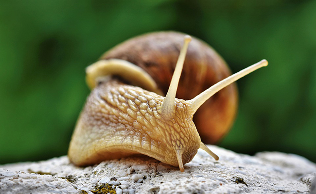

Bienvenue sur mon site
Je m'appelle Léonor Véron-Guaitella
Le thème de ce site est simple : c'est un hymne à la gloire des escargots.

Je m'appelle Léonor Véron-Guaitella
Le thème de ce site est simple : c'est un hymne à la gloire des escargots.